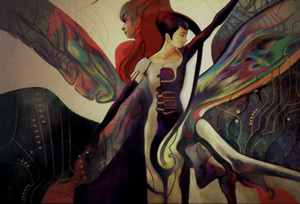
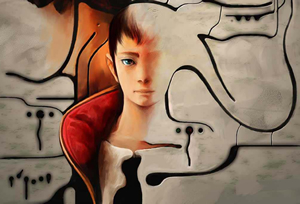

The Book of Genesis Theory
|  |
|
An excerpt from the Book of Genesis
in Panzer Dragoon Saga reads:
"At the dawn of Genesis the Gods created humans. The Gods decided the humans would create their own world. To enable such weak beings to complete such a task, all of the knowledge of the Gods was placed into the souls of humans." Did the Gods or Ancients create humans? They may very well have. "At the dawn of Genesis the Gods created humans." Think of it this way, the ancients were humans themselves, after many failed creations and incomplete prototypes, created perfect duplicates of themselves that could reproduce, resulting in the perfect drone. "The Gods decided the humans would create their own world. To enable such weak beings to complete such a task, all of the knowledge of the Gods was placed into the souls of humans." The perfect race of drones, built the towers to create their own environment and change it to however they or the Ancients saw fit. The Gods or Ancients, downloaded or programmed copies of all their vast knowledge into the minds of the drones, to enable such a task to be fulfilled, by the weaker versions of themselves, called humans. The Gods decided that the humans would create their own world or the world the Gods or Ancients wanted for themselves. The ancients did not want to undertake in such a dangerous task so the drones were created for this purpose. In Panzer Dragoon Orta, information about the drones propose and relation to humans, can be found saying: "Humanoid bio-engineered creatures that were produced during the Ancient Age. Many nonfunctional drones have been recovered from excavation sites at ruins, but a few functional samples have been miraculously discovered. Theorists believe that the drones were developed in order to perform dangerous tasks that the Ancients did not want to perform themselves. Therefore, the assumption is that drones were used in battle, and producing armaments, as well. It is from this purpose of labor that they have been given their name. And although drones have been known to exhibit advanced intelligence and are composed of flesh, there have only been a few documented cases in which a drone actually shows human-like emotions or will. Researchers have also discovered that not all drones were created equal. The drones were created in separate classes, depending on their abilities. The higher-end drones were thought to have been created to interface with biological weapons, or various technologies of the Ancient Age. It is known that Azel, who was "kidnapped" from an Imperial excavation site by the traitor Craymen during the Great Fall, was of this type of drone. Some variations of drones are nearly indistinguishable from real humans. Some records show that there were whole tribes of drones living in the borderlands during the years before the foundation of the Empire, pretending to be human." After many failed creations and prototypes, the Gods created the perfect drone. Many of the failed creations were the nonfunctional drones found in the ruins. A prime example of an incomplete prototype that was the closest thing to the Gods goal of a perfect drone would have to be Azel. The fact that there have only been a few documented cases in which a drone actually shows human-like emotions would have to be because a majority of the perfect drones that show human-like emotion are none other than the humans themselves, unaware that they were created by the Ancients. So in conclusion it was not the Gods or the Ancients who destroyed the Ancient Age, but their drone counter parts, called humans that brought about their own destruction. The Ancients foresaw all of this and went into hibernation hoping to return one day. |
 Azel: the perfect drone. |